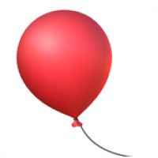
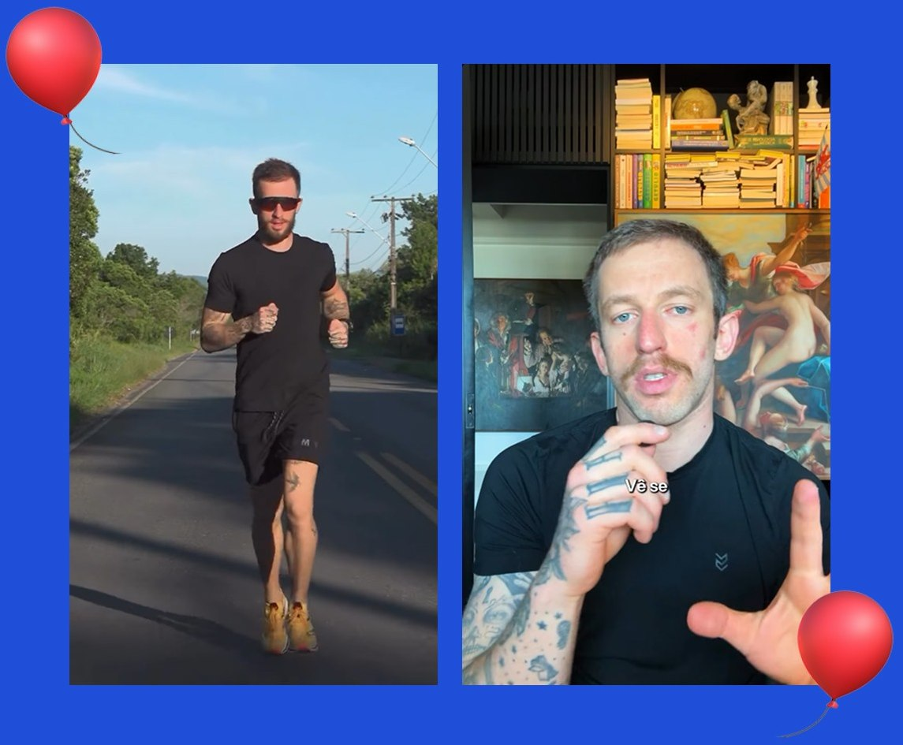
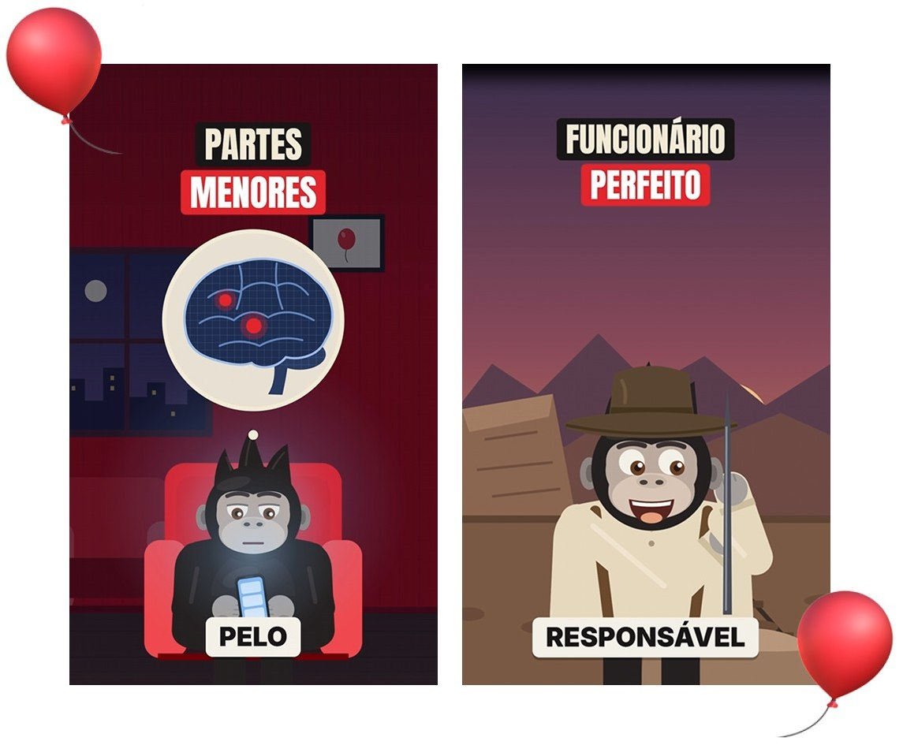
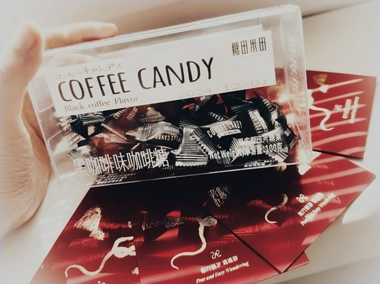
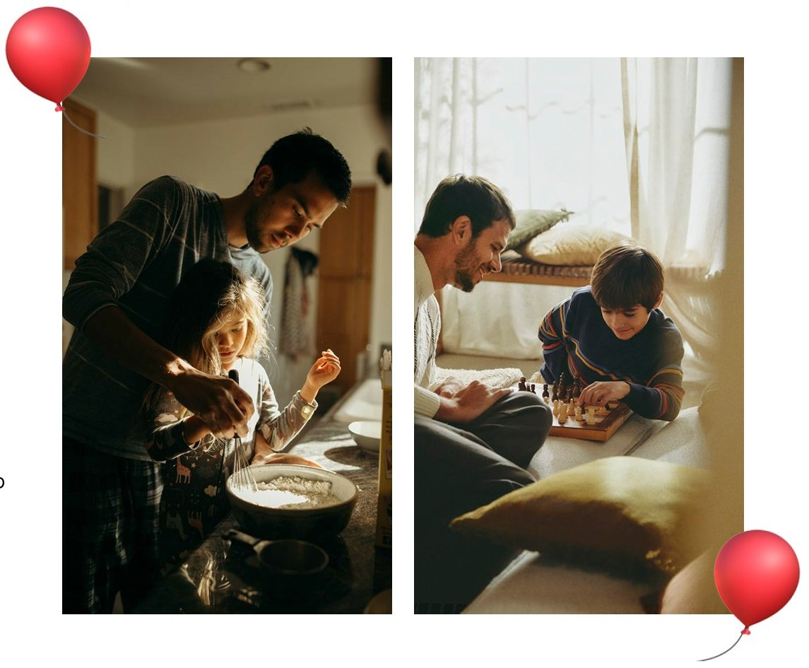
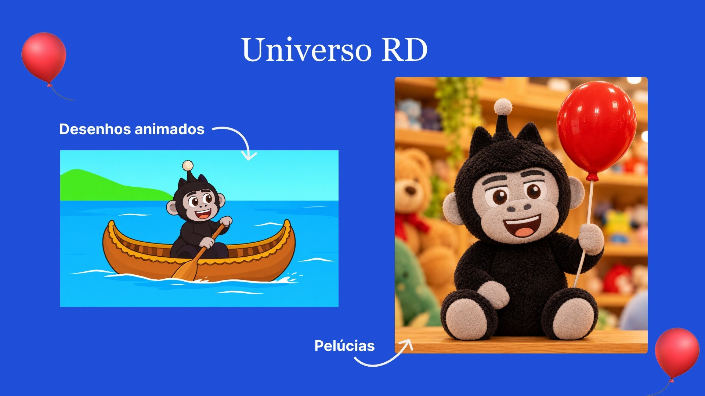
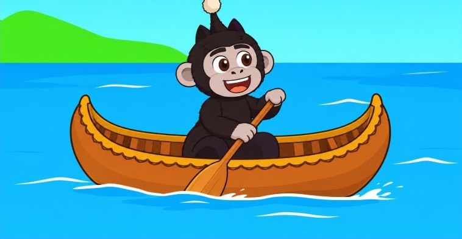
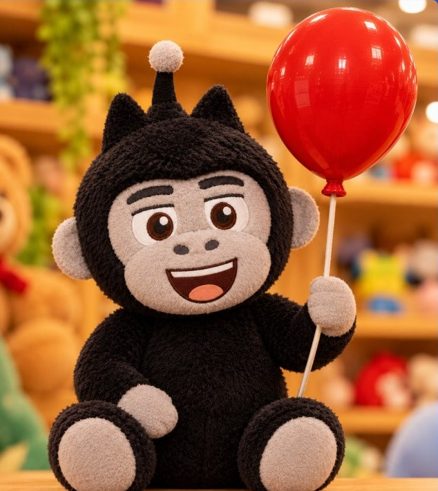

Reservatório de Dopamina
Animações 2D curtas que explicam, em linguagem simples, o conteúdo do Reservatório de Dopamina para quem ainda não entende o que Eslen Delanogare ensina.
Insight
Eu sou aluno do RD há mais de 3 anos. Mas, no começo, não compreendia direito o que o Eslen falava.
E se, assim como eu, existissem outras pessoas passando pela mesma situação?
Como podemos chegar até essas pessoas que ainda não sabem que precisam do Reservatório?

Solução
A didática dele é ótima, mas, se você puder desenhar, desenhe.
Por isso, criei um personagem 2D inspirado no mascote do RD e desenvolvi as animações.
Apliquei princípios de Design e Motion que aprendi ao longo de mais de 4 anos de experiência.
Mas a direção veio da minha visão sobre o público que ainda podemos explorar.

Nestlé no Japão

O Japão tinha uma cultura muito forte de consumo de chá, e o café não fazia parte dos hábitos de grande parte da população. A Nestlé tentava vender café instantâneo, mas enfrentava resistência.
Na década de 1970, a empresa teria recorrido ao consultor de marketing Clotaire Rapaille, que identificou uma barreira: as pessoas não tinham memórias afetivas de infância ligadas ao café.
A estratégia proposta foi diferente:
- Em vez de insistir em vender café para adultos, introduzir o sabor do café para crianças.
- Fazer isso por meio de doces, chocolates e sobremesas com sabor de café.
- Criar familiaridade e associações positivas com aquele sabor.
- Esperar que, quando essas crianças crescessem, tivessem mais abertura para consumir café.
Ela estava tentando formar um hábito futuro.
Pais e Filhos
E se, além de sermos mais “simples” para um público mais frio, também fôssemos a porta de entrada para crianças e adolescentes?
Eu ainda não sou pai, mas, quando for, quero transmitir aos meus filhos tudo o que aprendi com o Reservatório de Dopamina.
Dessa forma, poderei deixar ferramentas valiosas para que eles aprendam a lidar com o mundo à sua volta.


Universo RD


Essa foi a minha ideia.
Eu não sei quais são os objetivos de marca do RD, nem onde vocês querem chegar.
Mas acredito que, se esse projeto for bem estudado, pode dar bons frutos no futuro.
O que você acha?
PS: Vou deixar as animações no próximo slide para os curiosos.